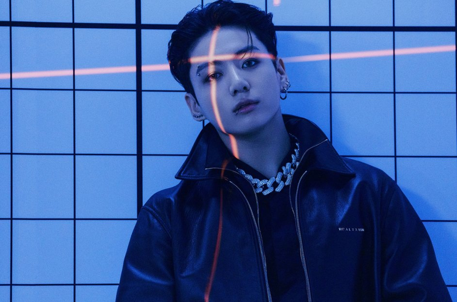

Jeon Jungkook
Idol Jeon Jungkook
About Jeon Jungkook
From the early days, Jungkook displayed a deep passion for music and idolized several prominent figures in the industry. At the age of 13, he auditioned for the popular television talent show, Superstar K, but unfortunately, did not make it past the preliminary round. However, fate had something much greater in store for him when he was scouted by the renowned entertainment company, Big Hit Entertainment, which eventually led to his debut as a member of BTS in 2013. Jeon Jungkook is an exceptionally talented artist who has made an indelible mark on the K-pop industry and the world. His remarkable vocals, electrifying dance moves, and charming personality have made him a beloved figure among BTS fans and people all around the globe. Jungkook's unwavering dedication to his craft, combined with his humility and authenticity, make him a role model for aspiring musicians and an inspiration to millions. Jeon Jungkook is a remarkable talent whose exceptional vocals, mesmerizing performances, and genuine personality have made him a force to be reckoned with in the music industry. From his early beginnings to his rise to international fame, Jungkook continues to inspire and captivate audiences with his artistry and passion. His contributions to the music industry and his continuous growth as an artist have undoubtedly solidified his place in the hearts of millions, ensuring his lasting impact on the world of music.
Things Jungkook loves

Jeon Jungkook loves eating ramen, his favourite ramen is the the Shin Ramyun. He also loves to drink alchohol. He loves playing games, drawing and soccer. Jungkook hobbies include video editing (Golden Closet Films), photography, discovering new music and making covers. Jung was interested in sports since his childhood. Jungkook loves playing badminton and wished to make a career out of it. Eventually, with the influence of the performance of his few favorite artists, he switched to becoming a singer. Currently, the youngest one of the BTS band is 25 years old.
About Me

Born:September 1 1997 Zodiac sign:Virgo
Nationality: South korean